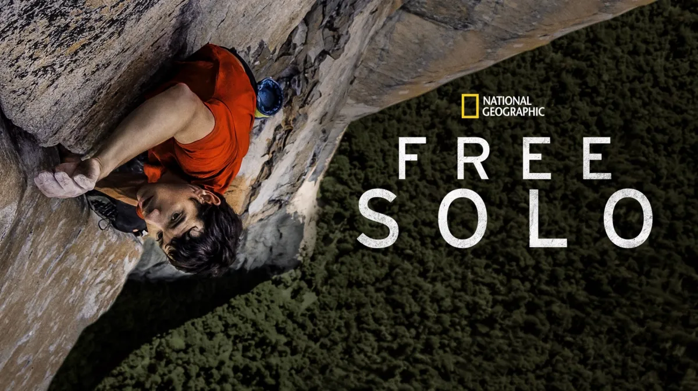

← Back to Home
Free Solo
Free Solo is a documentary that follows rock climber Alex Honnold as he attempts to climb El Capitan in Yosemite National Park without any ropes or safety gear. The film showcases Honnold's incredible skill and determination, as well as the physical and mental challenges he faces during his ascent.